| Menu Ferramentas |
 |
Essa ferramenta
permite cadastrar
e gerenciar os pontos de ensaio do voo e configurar os parâmetros de
interesse
para análise, validação e obtenção de dados de cada ponto.
A exibição dos
pontos de ensaio no
gráfico principal é realizada pela opção “Marcadores
de
pontos de ensaio”
no menu “Exibir” ou pelo
botão na
Barra de Ferramentas.
A validação dos
pontos de ensaio é
realizada pela opção “Validação
dos pontos de
ensaio” no menu “Ferramentas
► Gerenciamento de pontos
de ensaio ...” ou pelo botão  na
Barra de Ferramentas.
na
Barra de Ferramentas.
A visualização
dos ajustes de
curva dos pontos de ensaio é realizada pela opção “Visualização
dos ajustes de curva” no menu “Ferramentas ► Gerenciamento de pontos de ensaio ...” ou pelo
botão  na
Barra de Ferramentas.
na
Barra de Ferramentas.
A obtenção dos
dados dos pontos de
ensaio é realizada pelas opções “Obter
compilação de
dados”, “Obter
dados de ajustes de curva”
e “Obter
tabela de dados” no menu
“Ferramentas ►
Gerenciamento de pontos de ensaio ...” ou pelos botões  ,
,  e
e  na
Barra de Ferramentas.
na
Barra de Ferramentas.
Para iniciar a
ferramenta, clique
em “Ferramentas ► Gerenciamento de pontos de ensaio
... ► Editor de pontos
de ensaio” ou no botão na
Barra de Ferramentas.
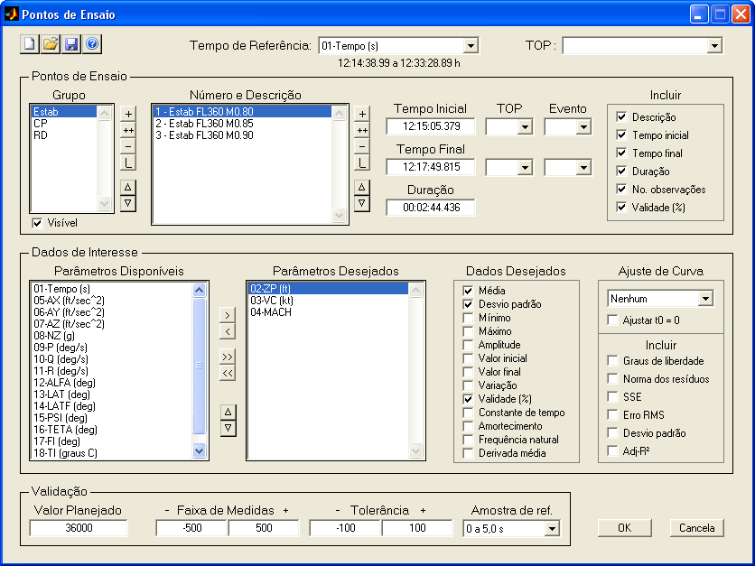
|
Nota: A ferramenta
requer resolução mínima de 1024 × 768
pixels e não executará em resoluções menores. |
Descrição
e Operação
Os pontos de
ensaio de um voo são organizados por grupo e cadastrados
individualmente. A lista de pontos pode ser salva e carregada pelo
usuário.
Cada ponto é
definido por um intervalo de tempo (início e
fim) referenciado de acordo com um parâmetro de tempo escolhido pelo
usuário.
Os grupos e os
pontos apresentam uma série de propriedades
que permitem a rápida análise,
validação e obtenção de dados de interesse.
A janela do
Editor de Pontos de
Ensaio apresenta as seguintes seções:
Barra
de Ferramentas
Permite criar,
salvar e carregar
as listas de pontos de ensaio em arquivos
.mat.
Para criar uma nova
lista, clique no botão  e
confirme. A lista anterior será descartada e
uma lista vazia será apresentada.
e
confirme. A lista anterior será descartada e
uma lista vazia será apresentada.
Para carregar uma
lista salva, clique no botão  ,
localize o arquivo .mat e
clique “Abrir”. A lista anterior será descartada e a lista indicada
será
carregada.
,
localize o arquivo .mat e
clique “Abrir”. A lista anterior será descartada e a lista indicada
será
carregada.
Para salvar a lista
atual, clique no botão  ,
indique ou localize um arquivo .mat
e clique “Salvar”.
,
indique ou localize um arquivo .mat
e clique “Salvar”.
Seletor
de Tempo de Referência e TOP
Para a correta referenciação dos pontos
de ensaio no tempo, é necessário indicar um parâmetro como tempo de
referência.
Esse parâmetro deve representar um tempo corrido em segundos e ser
adequado, ou
seja, monotônico crescente e sem pontos inválidos (“NaN”).
Indique o
parâmetro desejado no campo “Tempo de Referência”.
O R_DAT irá analisar se o parâmetro é adequado e informará a cobertura
de tempo
do parâmetro (primeira à última observação) logo abaixo do campo.
|
Nota: O Tempo de
Referência é único para o arquivo de trabalho e deve ser o mesmo usado
para referenciar os eventos cadastrados. |
Caso os pontos
de ensaio estejam definidos por TOPs, o usuário
poderá usá-los
para definir o tempo de início e/ou fim dos pontos. Esse parâmetro deve
ser
adequado, ou seja, ser composto por valores naturais crescentes.
Indique o
parâmetro desejado no campo “TOP”. A ferramenta só apresentará os
parâmetros reconhecidos
como TOP.
|
Nota: O número
máximo de TOPs
que podem ser usados como referência de pontos de ensaio é de 500. Os
demais TOPs
não serão apresentados e o usuário deverá inserir os respectivos tempos
manualmente. |
Pontos
de Ensaio
Essa seção
apresenta a lista de grupos de pontos de ensaio,
os pontos cadastrados, os botões de controle de grupos e pontos, os
campos para
definição dos tempos de início e fim de cada ponto e uma lista de
seleção de
dados gerais referentes a cada grupo.
Os pontos de
ensaio de cada grupo são definidos por um
número e uma descrição, que são apresentados na lista de pontos.
Controle de
Grupos de
Pontos de Ensaio
Para criar um novo
grupo, clique no botão  ,
indique o nome e clique “OK”.
,
indique o nome e clique “OK”.

O nome do grupo
é composto por texto alfanumérico não-vazio,
limitado a 16 caracteres.
Para duplicar um grupo,
selecione o grupo desejado, clique no botão ,
indique o nome e clique “OK”.
Para remover um grupo
e todos os seus pontos de ensaio, selecione o grupo a ser removido,
clique no
botão  e
confirme. Deve haver pelo menos um grupo
cadastrado.
e
confirme. Deve haver pelo menos um grupo
cadastrado.
Para renomear um grupo, selecione o grupo desejado,
clique no botão ,
indique o novo nome e clique “OK”.
Para mover um
grupo para cima na lista, selecione o grupo desejado e clique
no botão  .
.
Para mover um
grupo para baixo na lista, selecione o grupo desejado e
clique no botão  .
.
Para que um grupo seja visível no gráfico principal do R_DAT, marque a opção . Para ocultar o grupo de pontos, desmarque a opção.
Controle de
Pontos de Ensaio
Para acrescentar um
novo ponto à lista, clique no botão  ,
indique o número e a descrição e clique “OK”.
,
indique o número e a descrição e clique “OK”.
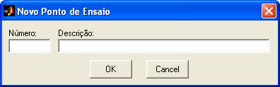
Esses
parâmetros são compostos por textos alfanuméricos
não-vazios, limitados respectivamente a oito e 56 caracteres.
Para duplicar um ponto
da lista, selecione o ponto desejado, clique no botão ,
indique o número e a descrição e clique “OK”.
Para copiar um ponto para outro grupo, selecione o ponto desejado, clique no botão , indique o novo grupo, o número e a descrição e clique “OK”.
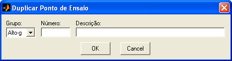
Para remover um ponto
da lista, selecione o ponto a ser removido, clique no botão  e
confirme. É possível fazer seleção múltipla.
e
confirme. É possível fazer seleção múltipla.
Para renomear um ponto da lista, selecione o ponto
desejado, clique no botão ,
indique o novo número e descrição e clique “OK”.
Para mover um
ponto para cima na lista, selecione o ponto desejado e clique
no botão  .
.
Para mover um
ponto para baixo na lista, selecione o ponto desejado e
clique no botão  .
.
Definição do
Intervalo
de um Ponto de Ensaio
Todo ponto de
ensaio deve ser definido por um intervalo de
tempo (início e fim) dentro do tempo de referência. Os tempos inicial e
final e
a duração do ponto selecionado são apresentados nos campos “Tempo
Inicial”,
“Tempo Final” e “Duração” no formato HH:MM:SS.MS.
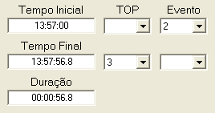
O usuário pode
definir os tempos de três formas:
- Insira os valores
manualmente nos campos “Tempo Inicial”, “Tempo Final” e/ou “Duração”,
em
qualquer formato
de tempo
reconhecido pelo R_DAT. É possível inserir qualquer
combinação de dois
valores, sendo o terceiro calculado automaticamente.
- Caso um parâmetro
de TOP tenha sido definido, selecione o número do TOP de início e/ou
fim do
ponto na coluna “TOP”. O campo “Tempo Inicial” e/ou “Tempo Final” será
preenchido automaticamente com o tempo referente ao TOP.
|
Nota: O tempo exato
em que o TOP ocorreu não é conhecido. Sabe-se apenas que o mesmo
ocorreu entre as duas observações consecutivas que registraram sua
mudança de valor na instrumentação. Para efeito de correlação entre TOP
e tempo, o R_DAT assume que o TOP ocorreu no ponto médio entre essas
duas observações. |
- Caso existam
eventos cadastrados, selecione o número do evento de início e/ou fim do
ponto
na coluna “Evento”. O campo “Tempo Inicial” e/ou “Tempo Final” será
preenchido
automaticamente com o tempo do evento.
Qualquer
combinação das opções é possível (inserção manual,
TOP ou evento).
|
Nota: O tempo final
deve ser maior ou igual ao tempo inicial de um ponto de ensaio. |
Dados Gerais
dos
Pontos
No campo
“Incluir”, o usuário pode indicar quais dados
gerais de cada grupo de pontos de ensaio deverão ser incluídos na compilação
de dados.
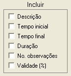
Para incluir um
dado, marque a respectiva caixa de seleção.
Os dados
disponíveis são:
|
Dado Geral |
Descrição |
|
Descrição |
Texto com a
descrição do ponto de ensaio. |
|
Tempo inicial |
Tempo inicial
do ponto de ensaio no formato HH:MM:SS.MS. |
|
Tempo final |
Tempo final do
ponto de ensaio no formato HH:MM:SS.MS. |
|
Duração |
Duração do
ponto de ensaio no formato HH:MM:SS.MS. |
|
No. observações |
Número de
linhas da matriz DADOS contidas no ponto de ensaio (tamanho da amostra). |
|
Validade (%) |
Porcentagem
geral de observações dentro das tolerâncias, considerando todos os
parâmetros relevantes que apresentam tolerâncias cadastradas. |
Os dados
selecionados são obtidos para todos os pontos de
ensaio do respectivo grupo.
A compilação de
dados é fornecida como uma planilha
Microsoft Excel, e apresenta:
- Primeira coluna:
Numeração
dos pontos de ensaio do grupo selecionado (sempre apresentada);
- Segunda coluna:
Descrição dos pontos de ensaio (opcional);
- Demais colunas:
Dados gerais selecionados pelo usuário (opcionais), seguidos dos dados
específicos dos parâmetros (definidos na próxima seção);
- Primeira linha:
Nomes dos dados gerais;
- Segunda linha:
Unidades dos dados gerais.
Exemplo:
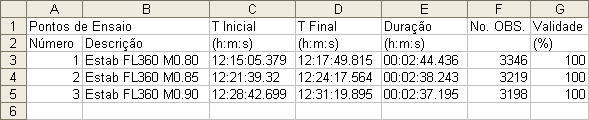
Dados
de Interesse
Essa seção
permite selecionar os parâmetros de interesse de um
grupo de pontos de ensaio e configurar os dados específicos e ajustes
de curva
dos parâmetros, possibilitando uma rápida compilação de dados para
análise.
Seleção de
Parâmetros
Os parâmetros
desejados para análise devem ser acrescentados
à lista “Parâmetros Desejados” a partir da lista “Parâmetros
Disponíveis”, que
contém todos os parâmetros das matrizes de trabalho. Cada grupo de
pontos
possui uma lista própria.
Para acrescentar um
parâmetro para análise, selecione-o na lista “Parâmetros
Disponíveis” e
clique no botão .
É possível fazer seleção múltipla.
Para remover um
parâmetro de análise, selecione-o na lista “Parâmetros
Desejados” e clique
no botão .
É possível fazer seleção múltipla.
Para acrescentar
todos os parâmetros para análise, clique no botão .
Para remover todos os
parâmetros de análise, clique no botão .
Para mover um
parâmetro desejado para cima, selecione-o na lista
“Parâmetros Desejados” e
clique no botão  .
.
Para mover um
parâmetro desejado para baixo, selecione-o na lista
“Parâmetros Desejados”
e clique no botão  .
.
Dados Desejados
No campo “Dados Desejados”, o
usuário pode indicar quais dados específicos dos parâmetros desejados
deverão
ser incluídos na compilação
de dados.
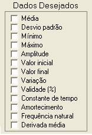
Para incluir um
dado, clique sobre o parâmetro de interesse
na lista “Parâmetros Desejados” e marque a caixa de seleção do dado
desejado. É
possível selecionar múltiplos parâmetros simultaneamente.
Os dados
disponíveis são:
|
Dado de
Interesse |
Descrição |
|
Média |
Valor médio do
parâmetro no intervalo do ponto de ensaio. |
|
Desvio padrão |
Desvio padrão
do parâmetro no intervalo do ponto de ensaio. |
|
Mínimo |
Valor mínimo do
parâmetro no intervalo do ponto de ensaio. |
|
Máximo |
Valor máximo do
parâmetro no intervalo do ponto de ensaio. |
|
Amplitude |
Diferença entre
os valores máximo e mínimo do parâmetro no intervalo do ponto de ensaio. |
|
Valor inicial |
Valor da
primeira observação do parâmetro no intervalo do ponto de ensaio. |
|
Valor final |
Valor da última
observação do parâmetro no intervalo do ponto de ensaio. |
|
Variação |
Diferença entre
os valores da última e da primeira
observações do parâmetro no intervalo do ponto de ensaio. |
|
Validade (%) |
Porcentagem de
observações do parâmetro dentro das tolerâncias cadastradas, no
intervalo do ponto de ensaio. |
|
Constante de
tempo |
Constante de
tempo de um ajuste de resposta de 1ª ordem do parâmetro no intervalo do
ponto de ensaio. |
|
Amortecimento |
Amortecimento
de um ajuste de resposta de 2ª ordem do parâmetro no intervalo do ponto
de ensaio. |
|
Frequência
natural |
Frequência
natural de um ajuste de resposta de 2ª ordem do parâmetro no intervalo
do ponto de ensaio. |
|
Derivada
média |
Coeficiente
angular de um ajuste de 1° grau do parâmetro no
intervalo
do ponto de ensaio. |
A figura abaixo
apresenta alguns dados de interesse de um
dos parâmetros de um ponto de ensaio:
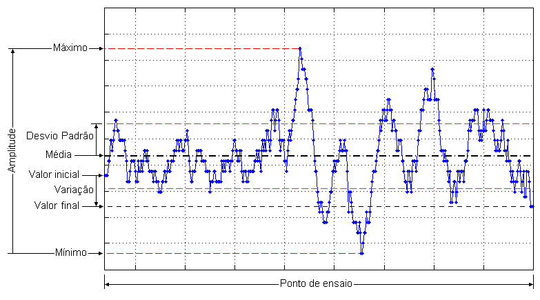
Os dados
referentes a ajustes de respostas dinâmicas
(constante de tempo, amortecimento e frequência natural) são obtidos da
mesma
forma que na função
de ajuste de
curva do menu
“Funções”.
Para obter a
compilação dos dados,
encerre a ferramenta de edição com o botão “OK” e clique em
“Ferramentas ► Gerenciamento de pontos de ensaio
... ► “Obter
compilação de dados” ou no
botão  na
Barra de Ferramentas.
na
Barra de Ferramentas.
A compilação de
dados é fornecida como uma planilha
Microsoft Excel, e apresenta:
- Primeiras colunas:
Dados gerais dos pontos de ensaio do grupo selecionado, conforme
definido pelo
usuário na seção “Pontos de Ensaio”;
- Demais colunas:
Dados de interesse dos parâmetros selecionados pelo usuário;
- Primeira linha:
Nomes e unidades dos parâmetros desejados;
- Segunda linha:
Tipo dos dados de interesse.
Exemplos:
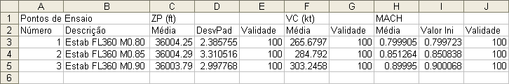
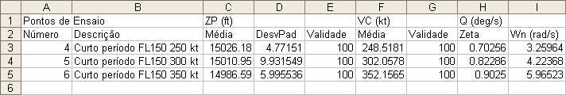
|
Nota: Caso um voo
contenha pontos de ensaio de diferentes tipos (como nos exemplos
acima), o usuário deve criar grupos
diferentes para cada tipo de pontos e configurar os dados de interesse
para cada grupo. |
Ajuste de Curva
No campo
“Ajuste de Curva”, o usuário pode configurar o tipo
de curva e os dados estatísticos dos ajustes a serem realizados nos
parâmetros
desejados, nos intervalos dos pontos de ensaio. Os resultados são
apresentados
na obtenção
de dados de
ajustes de curva.
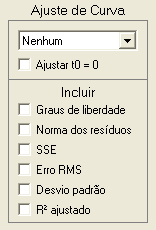
Para incluir um
ajuste de curva, clique sobre o parâmetro de
interesse na lista “Parâmetros Desejados” e selecione o tipo de ajuste
desejado. É possível selecionar múltiplos parâmetros simultaneamente.
As opções de
ajuste de curva são:
|
Ajuste |
Descrição |
|
Nenhum |
Ajuste de curva
desabilitado. |
|
Linear |
Ajuste
polinomial de 1° grau, que fornece uma reta. |
|
Quadrático |
Ajuste
polinomial de 2° grau, que fornece uma parábola. |
|
Cúbico |
Ajuste
polinomial de 3° grau. |
|
4° grau |
Ajuste
polinomial de 4° grau. |
|
5° grau |
Ajuste
polinomial de 5° grau. |
|
6° grau |
Ajuste
polinomial de 6° grau. |
|
Primeira ordem |
Ajuste de
resposta de sistema de primeira ordem a uma entrada do tipo degrau, que
fornece uma constante de tempo e um valor de convergência. |
|
Segunda ordem |
Ajuste de
resposta de sistema de segunda ordem a uma entrada do tipo pulso ou
degrau, que fornece uma frequência natural e um amortecimento. |
Para evitar
erros numéricos quando a abscissa apresenta
valores muito grandes (como hora do dia em segundos), é recomendado
aplicar um offset na abscissa de
forma que o
intervalo do ponto de ensaio inicie
Para incluir
dados estatísticos do ajuste, clique nos dados
desejados no campo “Incluir”.
Os dados
estatísticos disponíveis são:
|
Dado |
Observação |
|
Graus de
liberdade |
Diferença entre
o número de pontos da amostra e o número de coeficientes da equação
ajustada. |
|
Norma dos
resíduos |
Representa uma
medida da aderência do ajuste, onde valores menores indicam ajustes
melhores. |
|
SSE “Sum
of squares due to error” |
Mede o desvio
da resposta com relação aos valores ajustados. Um valor próximo de zero
indica um melhor ajuste. |
|
Erro
RMS “Root
mean squared error” |
Fornece a média
quadrática dos erros. Um valor próximo de zero indica um melhor ajuste. |
|
Desvio padrão |
Fornece o desvio padrão dos erros. Um valor próximo de zero indica um melhor ajuste. |
|
R²
ajustado |
Coeficiente de
múltipla determinação ajustado pelos graus de liberdade. Representa uma
medida normalizada da qualidade do ajuste, variando de |
Para mais
informações sobre as estatísticas do ajuste,
clique aqui.
Para obter os
dados dos ajustes de
curva, encerre a ferramenta de edição com o botão “OK” e clique em
“Ferramentas
► Gerenciamento de pontos de ensaio
... ► “Obter
dados de ajustes de
curva” ou no botão na Barra de Ferramentas.
Os ajustes de
curva e os coeficientes são obtidos da mesma
forma que na função
de juste
de curva do menu
“Funções”.
Os dados de
ajustes de curva são fornecidos como uma
planilha Microsoft Excel, e apresenta:
- Primeira coluna:
Numeração dos pontos de ensaio do grupo selecionado;
- Demais colunas:
Coeficientes das curvas ajustadas, offset
da abscissa e dados estatísticos desejados;
- Primeira linha:
Nomes, unidades dos parâmetros desejados e tipo de ajuste;
- Segunda linha:
Nomenclatura dos coeficientes das curvas e dos dados desejados.
Exemplos:

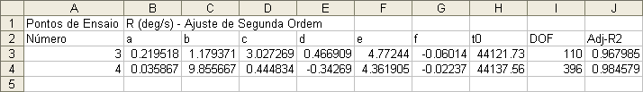
| Nota: Caso um voo
contenha pontos de ensaio de diferentes tipos (como nos exemplos
acima), o usuário deve criar grupos
diferentes para cada tipo de pontos e configurar os ajustes de curva
desejados para cada grupo. |
Validação
Essa seção
permite inserir os valores de tolerância e faixa
de medidas necessários
ao cálculo da validade dos
pontos de ensaios, usado na compilação
de
dados e na função de validação
dos
pontos de ensaio.
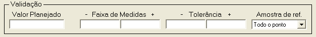
Para cada ponto
de ensaio e para cada parâmetro desejado é
possível definir um conjunto de parâmetros de validação.
Para inserir os
parâmetros de validação:
- Clique sobre o
ponto desejado na lista de pontos de ensaio. É possível selecionar
múltiplos
pontos simultaneamente;
- Clique sobre o
parâmetro para o qual deseja inserir valores de validação na lista de
parâmetros desejados. É possível selecionar múltiplos parâmetros
simultaneamente;
- Insira os
parâmetros de validação desejados nos campos específicos.
Os seguintes
campos são definidos:
|
Campo |
Descrição |
|
Valor Planejado |
Valor do
parâmetro planejado para a execução do ponto. |
|
Faixa de Medidas |
Faixa ao redor
do valor planejado em que o ponto pode ser realizado. |
|
Tolerância |
Faixa ao redor
do valor inicial em que o parâmetro pode variar. |
|
Amostra de
Referência |
Intervalo de
tempo após o início do ponto cuja média fornece o valor inicial do
parâmetro, usado como referência para o decorrer do ponto de ensaio. |
A figura abaixo
apresenta graficamente os valores definidos:
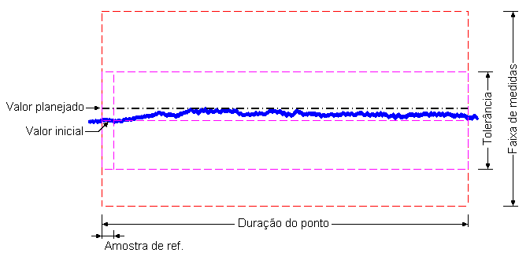
A amostra de
referência escolhida se aplica a todo o grupo
de pontos de ensaio. As opções são:
|
Opção |
Descrição |
|
Todo o ponto |
Valor inicial
do parâmetro é a média de todo o ponto. |
|
|
Valor inicial
do parâmetro é a média do primeiro 0,1 segundo do ponto. |
|
|
Valor inicial
do parâmetro é a média do primeiro 0,2 segundo do ponto. |
|
|
Valor inicial
do parâmetro é a média do primeiro 0,5 segundo do ponto. |
|
|
Valor inicial
do parâmetro é a média do primeiro segundo do ponto. |
|
|
Valor inicial
do parâmetro é a média dos primeiros 2 segundos do ponto. |
|
|
Valor inicial
do parâmetro é a média dos primeiros 5 segundos do ponto. |
A validade dos
parâmetros é fornecida como o percentual de
observações dentro da tolerância e da faixa de medidas.
Os valores
necessários e o intervalo de validade para cada
critério são:
|
Critério |
Valores
Necessários |
Intervalo de
Validade (inclui os
limites) |
|
Faixa de Medidas |
Valor planejado
e variação inferior e superior da faixa de medidas |
Valor planejado
± Variação da faixa de medidas |
|
Tolerância |
Amostra de
referência e tolerâncias inferior e superior |
Valor inicial ±
Tolerâncias |
Os critérios de
validação são independentes, ou seja, é
possível inserir apenas os valores necessários para um ou outro
critério.
Para a
validação geral do ponto de ensaio, é considerada a intersecção
da validade de todos os parâmetros desejados que possuam valores de
validação
cadastrados.
Sair
Para confirmar
as alterações na
lista de pontos de ensaio e voltar à tela principal do R_DAT, clique no
botão
“OK” e confirme. A
lista de pontos atual será atualizada, permitindo realizar as operações
que
fazem uso da mesma. Ao salvar as matrizes de trabalho, a lista de
pontos de
ensaio será incluída no arquivo.
Para descartar
as alterações e
voltar à tela principal do R_DAT, clique no botão “Cancela” e confirme.
| |
Gerenciamento
de pontos de ensaio |
Criar/alterar
ponto de ensaio |
|